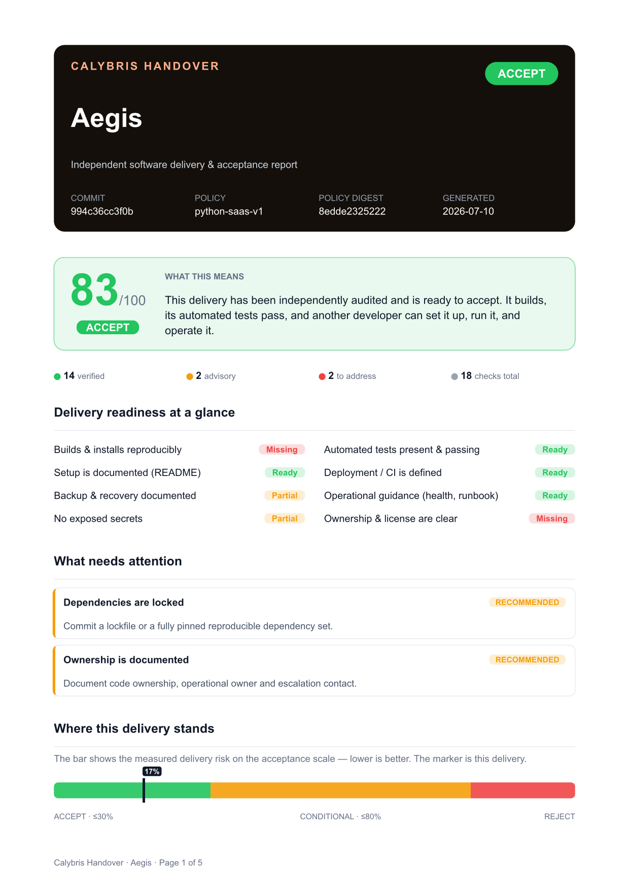
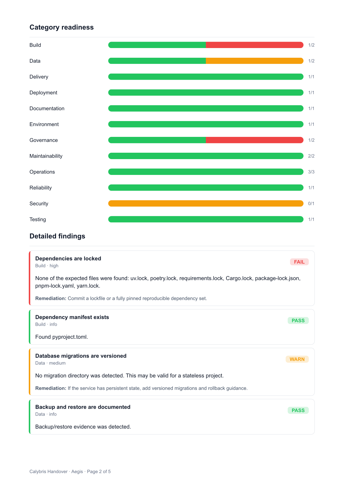
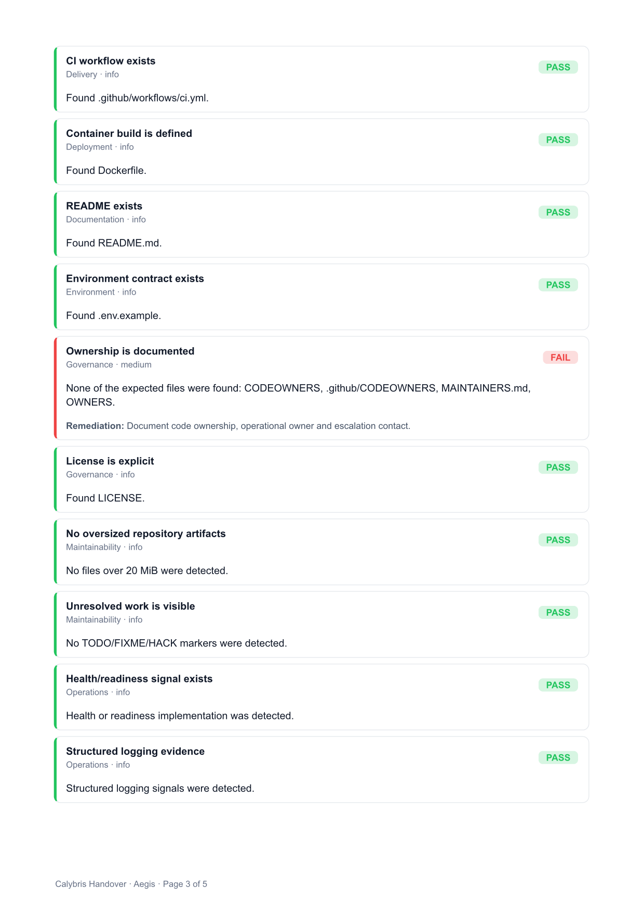
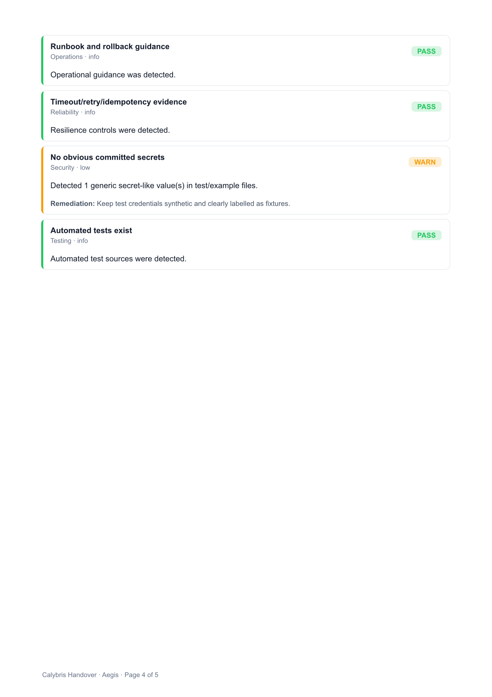
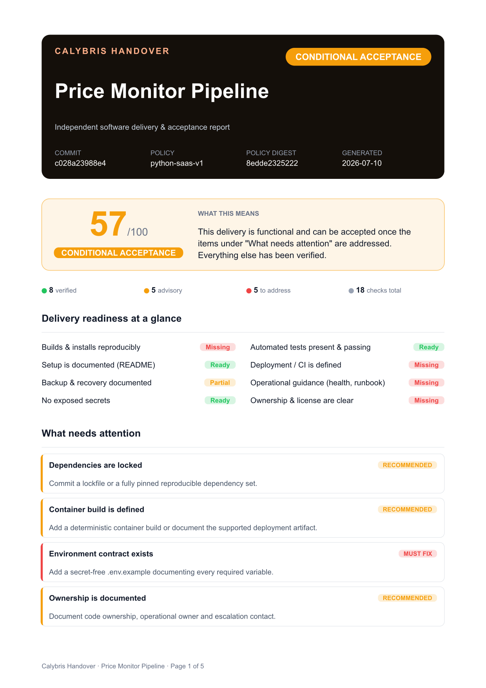
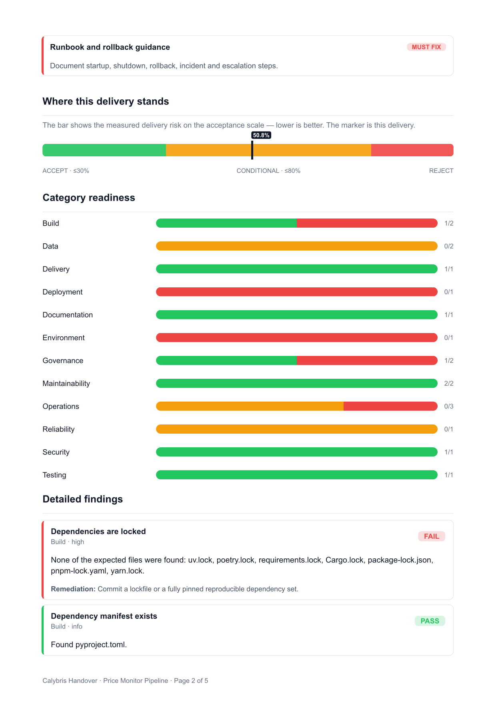
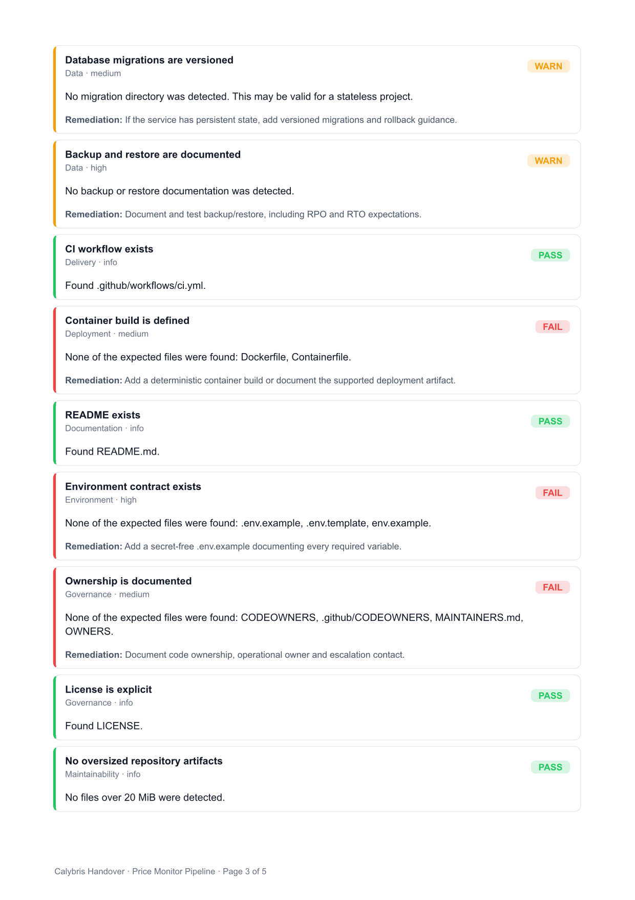
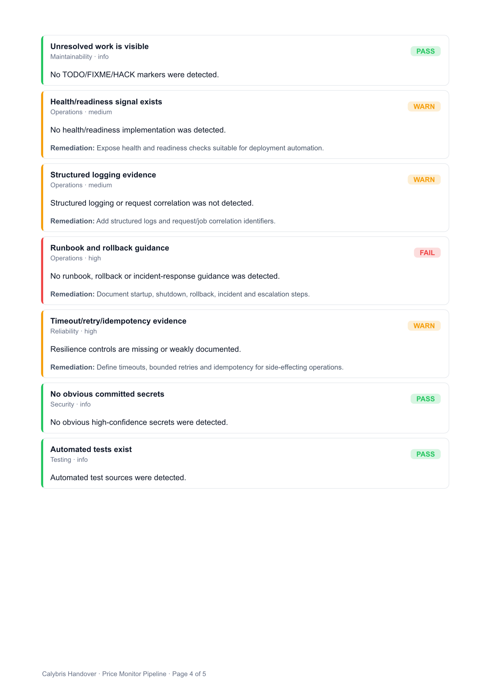

Yazılım teslimi,
kanıtlanabilir bir
kararla.Software delivery,
with a verifiable
decision.
Audit → quantify risk → Calybris decides → replay-verified PDF
Bir repoyu denetler, teslim riskini ölçer ve Calybris Core'a ACCEPT / CONDITIONAL / REJECT kararı verdirir. Sonuç: kurcalamaya karşı korumalı, deterministik olarak yeniden üretilebilen bir kabul raporu — JSON, HTML ve premium Typst PDF olarak.
It audits a repository, quantifies delivery risk, and asks Calybris Core for an ACCEPT / CONDITIONAL / REJECT decision. The output is a tamper-evident, deterministically reproducible acceptance report — as JSON, HTML, and a premium Typst PDF.
Tarayıcı kanıt üretir, Calybris karar verirScanners produce evidence, Calybris decides
Denetleyici sadece riski ölçer. Verdict'i seçen tek şey Calybris — riski politika bantlarına eşleyerek.The auditor only quantifies risk. The verdict is chosen solely by Calybris, by mapping risk onto the policy bands.
DenetleAudit
20+ deterministik kontrol: build, test, deploy, güvenlik, veri kurtarma, operasyon, sahiplik.20+ deterministic checks: build, tests, deploy, security, data recovery, ops, ownership.
Riski ölçQuantify risk
Her bulgu ağırlıklı risk üretir; blocker ve kritik açıklar riski üst banda taşır.Each finding adds weighted risk; blockers and critical gaps push it into a higher band.
Calybris
Risk + politika tavanları → prescribe() tek adayı seçer. Verdict budur.Risk + policy ceilings → prescribe() selects one candidate. That is the verdict.
KanıtlaProve
Policy / input / decision digest'leri + replay doğrulaması ile mühürlenir.Sealed with policy / input / decision digests + replay validation.
Report
JSON + HTML + Typst PDF. verify ile tekrar doğrulanır.JSON + HTML + Typst PDF. Re-checkable with verify.
Neyi denetliyorWhat it checks
Temel soru: “Bu projeyi geliştiren yarın kaybolsa, başkası kurabilir, çalıştırabilir, yedekten döndürebilir ve güvenle işletebilir mi?”The core question: “If whoever built this vanished tomorrow, could someone else set it up, run it, restore from backup, and operate it safely?”
Build & deps
Manifest, lockfile, tekrar üretilebilirlik.Manifest, lockfile, reproducibility.
Tests
Test kaynağı + gerçek çalıştırma (opt-in).Test sources + real execution (opt-in).
Deployment
Container build, CI, env sözleşmesi.Container build, CI, env contract.
Security
Committed secret taraması, provenance.Committed secret scan, provenance.
Data & recovery
Migration, backup/restore dokümanı.Migrations, backup/restore docs.
Operations
Health, structured logging, runbook.Health, structured logging, runbook.
Documentation
README, kurulum, onboarding.README, setup, onboarding.
Ownership
CODEOWNERS, lisans, sahiplik.CODEOWNERS, license, ownership.
Karar Calybris'in — mühürlü ve tekrar üretilebilirThe decision is Calybris's — sealed and reproducible
Risk üç adaya sunulur; her birinin politika-tanımlı bir risk tavanı vardır. Calybris riskin sığdığı tek adayı seçer. Aynı girdiyle her seferinde aynı karar.Risk is offered to three candidates, each with a policy-defined risk ceiling. Calybris selects the single candidate the risk fits under. Same input, same decision, every time.
| candidate 1 | risk ≤ 30% iseif risk ≤ 30% | ACCEPT |
| candidate 2 | risk ≤ 80% iseif risk ≤ 80% | CONDITIONAL_ACCEPTANCE |
| candidate 3 | aksi haldeotherwise | REJECT |
| fail-closed | binding yok / düşük güven / replay geçmezno binding / low confidence / replay fails | INDETERMINATE |
İki gerçek denetim, tek karar motoruTwo real audits, one decision engine
Kendi flagship'im Aegis temiz geçiyor; daha küçük bir teslim paketi somut eksiklerle CONDITIONAL alıyor. Aynı Calybris, aynı replay-doğrulanmış kanıt. Karta tıkla, PDF'i indir, verify ile kendin doğrula.My flagship Aegis passes clean; a smaller delivery package lands CONDITIONAL with concrete gaps. Same Calybris, same replay-verified proof. Click a card, download the PDF, confirm it yourself with verify.








$ calybris-handover verify handover-report.json → report digest verified
Ne olduğu — ve ne olmadığıWhat it is — and isn't
Bu, çalışan bir yerel CLI alpha'sı; hosted SaaS değil. Yazılımın hatasız veya güvenli olduğunu kanıtlamaz — beyan edilen kontrollerden kanıta dayalı bir teslim kararı üretir. Sandbox uzak çalıştırma, imzalı sertifikalar ve ekip politika paketleri sonraki sürümlere ait.This is a working local CLI alpha, not a hosted SaaS. It does not prove software is bug-free or secure — it produces an evidence-backed delivery decision from declared checks. Sandboxed remote execution, signed certificates, and team policy packs belong to later versions.